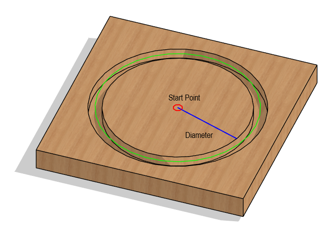
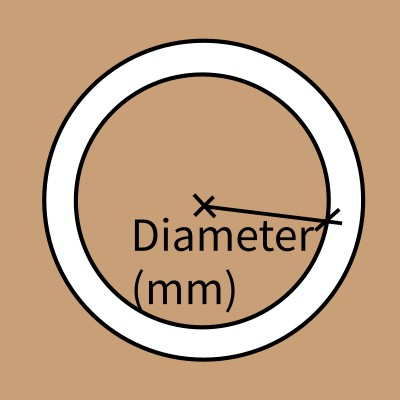

GRBL Circular Cutout G-Code Generator
Generates G-Code for a circular cutout (or profile pass) using a single circle (G3 arc) per depth pass. The tool center is offset outside the defined diameter. Zero point is the center (X0, Y0).
3D Toolpath Preview
The path will appear once you press the generate button.
Order of operations:
- Zero the machine at the center (X0, Y0).
- Tool will lift up and travel to the cutting radius.
- Tool will plunge and cut circular path.
- Once finished it will lift up and travel to center at safe height.
Input Parameters
|  | Finished Cutout Diameter is the final diameter of the circular cutout after machining. The tool path is calculated to achieve this finished size. |
 |
Total Depth (Z) is the final, negative Z-coordinate the tool will reach. This defines how deep the cutout will be. |
 |
Tool Diameter is the width of the end mill used for cutting. The tool path is offset by half this diameter outside the finished diameter. |
 |
Stepdown (Z) is the maximum depth the tool will cut in a single pass before starting the next circular layer. |
 |
Feed Rate (XY) is the speed at which the tool moves along the circular path during cutting operations. |
 |
Plunge Rate (Z) is the speed at which the tool moves vertically (down) when entering the material for each circular pass. |
 |
Safety Z Height is a clear height above the material that the tool uses when moving between non-cutting operations. |
-
Raw G-Code Preview expand_more